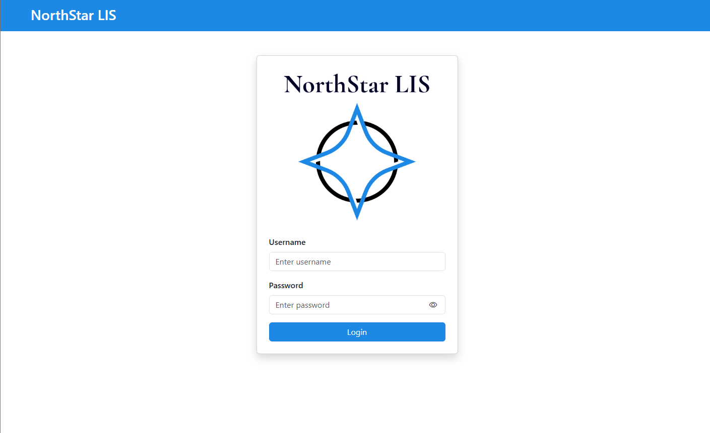
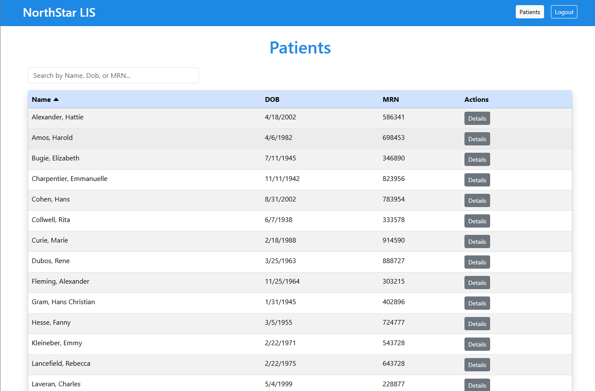
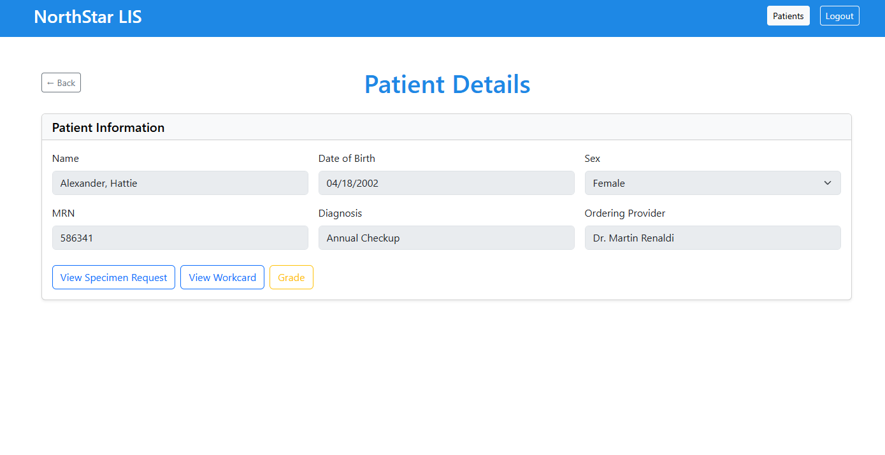
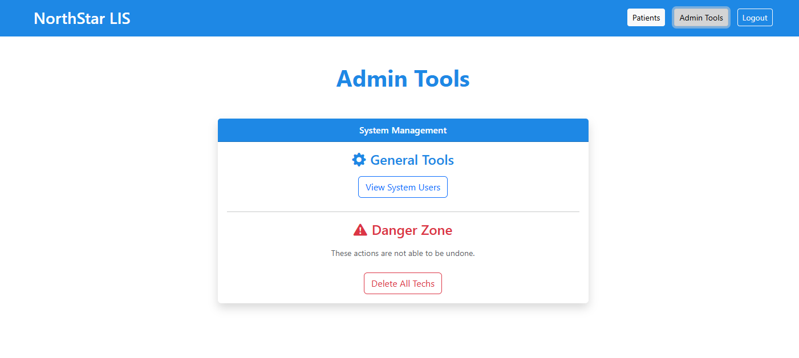

A full-featured lab management system built with modern web technologies, designed to streamline lab operations, patient record management, and result tracking.
NorthStar LIS is a full stack Laboratory Information System designed to manage patients, specimen requisitions, and microbiology workcards in a clinical setting.
The system replaces traditional paper workflows that are still in use mostly in educational settings. The system allows users to create, edit, track, and complete laboratory records efficently.

All users can login here. Uses proper authentication with JWT and role authorization.

A clean list displaying patients assigned to the current user. Allows for searching and sorting by clicking the bold column identifiers.

Displays the current patients details. A grade toggle for professors to grade students work.

Allows professors to manage students. Also allows me to manage professors.